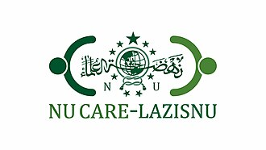

Fasilitas ambulance gratis untuk masyarakat yang diselenggarakan oleh NU Care-LAZISNU Pengurus Ranting NU Sowan Kidul, Kedung, Jepara.
Klik tombol di atas untuk tersambung ke WhatsApp Call Center kami.
Tim relawan Banser Husada dan pengurus yang bertugas memastikan mobil umat selalu siaga untuk masyarakat.